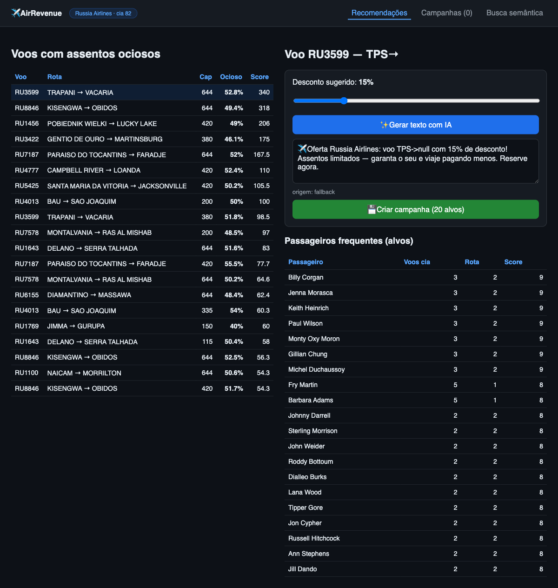

Hackathon TiDB × AWS · São Paulo 2026
AirRevenue
O copiloto que enche o voo antes de ele decolar vazio.
Recomendação de promoções para voos ociosos — direto para o passageiro certo.
O problema
Todo assento que decola vazio é receita perdida para sempre.
- O revenue manager da companhia só enxerga a ociosidade nos relatórios — depois do voo partir.
- Promoção vai para a base inteira: baixa conversão e desconto dado a quem já compraria.
- Redigir a campanha leva dias. O voo não espera.
O que os dados mostram
Base airportdb no TiDB — uma semana de voos que tocam o Brasil:
50,6%ociosidade média da frota
632 milassentos vazios na semana
US$ 155Mreceita potencial na mesa
Metade dos assentos voa vazia. Existe uma base de passageiros frequentes esperando a oferta certa.
A solução
Uma área por companhia que, em segundos:
- Ranqueia os voos ociosos por urgência (assentos vazios × dias até partir).
- Escolhe o público: passageiros frequentes com histórico na rota.
- Gera a promoção com IA (Amazon Bedrock) e cria a campanha.
De dias para segundos. O usuário tem nome: o revenue manager da companhia.
O produto, funcionando

Como funciona
- TiDB guarda voos, reservas e campanhas — e roda o ranking multi-tenant.
- Busca vetorial no TiDB (VEC_COSINE_DISTANCE + EMBED_TEXT) acha "voos parecidos".
- Bedrock (Claude 3 Haiku, Singapura) escreve o texto da oferta.
- FastAPI + Vue na EC2, com segurança zero-trust.
Zero-trust por dentro
- Toda rota exige JWT assinado e curto — nada de confiar no cliente.
- Isolamento multi-tenant: a companhia A nunca vê dado da companhia B (filtro pelo airline_id do token).
- PII de passageiros mascarada; segredos só no
.env.
- 11 testes ScanAPI passando — incluindo token forjado devolve 401.
Por que importa
Para a companhia:
- Recupera receita de assentos que iam decolar vazios.
- Desconto cirúrgico — só para quem precisa do empurrão.
- Campanha pronta em segundos, no tom da marca.
Segundospara produzir uma campanha (era: dias)
AirRevenue
O assento vazio deixa de ser prejuízo e vira a próxima venda.
TiDBdados + vetorial
BedrockIA generativa
AWSpublicado na EC2
Kirospec-driven
Obrigado. Bora encher esses voos.